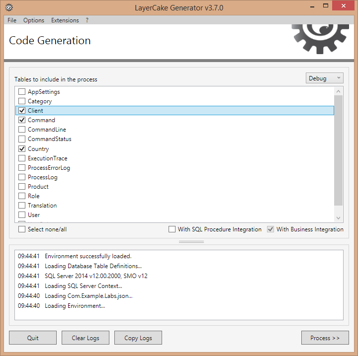

Duration: ~30mins
In the previous lab (Lab - 05 - Business Layer) we have created the GetClientWithCommands() business method.
Each highlighted method access to the database. This approach is quite easy but implies too many database access.
[BusinessMethod] public Client GetClientWithCommands(IUserContext userContext, int clientRef, bool withProducts = false) { var client = this.GetClientByRef(userContext, clientRef); if (client != null) { using (var et = new ExecutionTracerService()) using (var dbClient = new ClientCrud(userContext)) using (var dbCommand = new CommandCrud(userContext)) { dbClient.LoadCommandCollection(ref client); // retrieve all the commands of the client (-> client.CommandCollection) client.CommandCollection.AsParallel().AsOrdered().ForEach(command => // .AsParallel() -> PLINQ feature { var currentCommand = command; dbCommand.LoadCommandStatus(ref currentCommand); if (withProducts) // retrieve commandlines and products { dbCommand.LoadCommandLineCollection(ref currentCommand); using (CommandLineCrud dbCommandLine = new CommandLineCrud(userContext)) { currentCommand.CommandLineCollection.AsParallel().AsOrdered().ForEach(commandLine => { var currentCommandLine = commandLine; dbCommandLine.LoadProduct(ref currentCommandLine); }); } } }); } } return client; }
In fact we could use a stored procedure to retrieve the data one-shot.
Add the following stored procedure on the SQL Server.
CREATE PROCEDURE [dbo].[Client_Custom_GetClientWithCommands] ( @ClientRef INT, @CtxUser BIGINT = NULL, -- Parameter required by LCG. Not used there @CtxCulture VARCHAR(2) = N'EN', -- Parameter required by LCG. Not used there @CtxWithContextSecurity BIT = NULL -- Parameter required by LCG. Not used there ) AS BEGIN SET NOCOUNT ON; SELECT [Client].*, [Command].*, [CommandLine].*, [CommandStatus].*, [Product].* FROM [Client] WITH(NOLOCK) INNER JOIN [Command] WITH(NOLOCK) ON [Command].[Command_IdClient] = [Client].[Client_Id] LEFT JOIN [CommandLine] WITH(NOLOCK) ON [CommandLine].[CommandLine_IdCommand] = [Command].[Command_Id] LEFT JOIN [CommandStatus] WITH(NOLOCK) ON [CommandStatus].[CommandStatus_Id] = [Command].[Command_IdCommandStatus] LEFT JOIN [Product] WITH(NOLOCK) ON [Product].[Product_Id] = [CommandLine].[CommandLine_IdProduct] WHERE [Client].[Client_Ref] = @ClientRef END GO
Open the Com.Example.Labs.Crud project
Edit the ClientCrud.custom.cs file and add the following method.
public Client GetClientWithCommands(int clientRef, bool withProducts = false) { var parameters = new Dictionary<string, object>(); parameters.Add("@ClientRef", clientRef); using (var et = new ExecutionTracerService()) { return base.ToEntityCollection("Client_Custom_GetClientWithCommands", parameters).FirstOrDefault(); } }
DbConnection dbConnection = null; using (IDataReader dbReader = base.ToDataReader( "Client_Custom_GetClientWithCommands", parameters, out dbConnection)) { while (dbReader.Read()) { Client client = new Client(); client.Map(dbReader, base.UserContext); ... } } if (dbConnection != null) { dbConnection.Close(); }
using (DataTable dt = base.ToDataTable( "Client_Custom_GetClientWithCommands", "Client", null)) { foreach (DataRow row in dt.Rows) { Client client = new Client(); client.Map(row, base.UserContext); ... } }
using (DataSet ds = base.ToDataSet( "Client_Custom_GetSomeData", parameters, "TableResult1", "TableResult2", "TableResult3")) { DataTable dt1 = ds.Tables["TableResult1"]; ... }
Note: custom mapping is also possible using Map() and DeepMap() methods defined in the Model Layer.
Open the Com.Example.Labs.Business project and add (or edit) the method in the ClientBusiness.custom.cs file.
[BusinessMethod] public Client GetClientWithCommands(IUserContext userContext, int clientRef, bool withProducts = false) { using (var et = new ExecutionTracerService()) using (var db = new ClientCrud(userContext)) { return db.GetClientWithCommands(clientRef, withProducts); } }
Finally compile the solution again and run LayerCake Generator to integrate the new Business method on Service & WCF layers.
